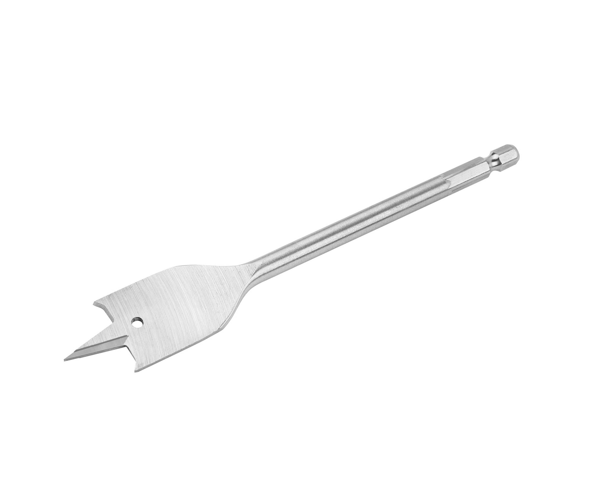

 ดอกเจาะใบพาย ไว้สำหรับเจาะไม้ โดยใช้งานร่วมกับสว่านทั่วไป (หัวจับหกเหลี่ยม) แกนจับ 2 หุน
มีให้เลือกหลายขนาด
จุดเด่นของดอกเจาะใบพาย เมื่อเทียบกับดอกสว่านธรรมดา จะมีข้อดีที่ขนาดของแกนจับไม่ใหญ่ตามขนาดของดอกเจาะ
โดยมีขนาดเล็กหรือใหญ่เฉพาะตรงหัวเจาะของดอก ทำให้เราสามารถใช้สว่านที่มีขนาดเล็กมาจับดอกเจาะที่มีขนาดใหญ่ได้ ซึ่งจะแตกต่างกับดอกสว่านทั่วๆ ไป ที่จะมีขนาดแกนจับแตกต่างกันไปตามขนาดของดอกเจาะ
ด้วยลักษณะของดอกเจาะใบพายที่มีรูปร่างแบน จึงทำให้มีราคาไม่สูงมาก เมื่อเทียบกับดอกสว่านทั่วไปที่มีขนาดรูเจาะใหญ่เท่ากัน และดอกเจาะใบพายจะมีปลายแหลมที่มีคุณสมบัติช่วยในการเจาะให้ตรงจุด
เนื่องจากปลายของดอกเป็นมุมแหลมและจิกลงบนชิ้นงาน สามารถช่วยนำเจาะลงบนชิ้นงานได้ดี ต่างจากดอกสว่านที่มีหัวเป็นมุมป้าน ซึ่งเวลาเจาะมีโอกาสที่จะสไลด์หนีแนวเจาะได้ง่ายกว่า
คุณสมบัติ
คำแนะนำการใช้งาน
แนวปฏิบัติด้านความปลอดภัยสำหรับการเจาะ
คุณสมบัติ
-ดอกเจาะไม้ใบพายใช้ได้กับการเจาะไม้ทุกประเภท ทั้งไม้เนื้อแข็ง, ไม้เนื้ออ่อน และไม้อัด
-ดอกสว่านมีความคมเป็นพิเศษ ให้รูเจาะที่เที่ยงตรง และไม่เกิดรอยฉีก
-ช่วยในการเจาะให้ตรงจุด เนื่องจากปลายของดอกเป็นมุมแหลม และจิกลงบนชิ้นงานได้ดี
-สามารถช่วยนำเจาะลงบนชิ้นงานได้ดี ต่างจากดอกสว่านที่มีหัวเป็นมุมป้าน ซึ่งเวลาเจาะมีโอกาสที่จะสไลด์หนีแนวเจาะได้ง่ายกว่า
-แกนจับดอกมีขนาด 2 หุน ใช้งานได้กับสว่านทุกชนิด
-ผลิตตามมาตรฐานโรงงานด้วยเหล็กกล้าที่ผ่านการชุบแข็งเป็นพิเศษ
-มีความแข็งแรง ทนทาน มีอายุใช้งานยาวนาน ไม่ก่อให้เกิดสนิมง่าย
-เลือกใช้งานตามขนาดที่ต้องการ ดอกใบพายมีปลายแหลม เจาะนำได้ดี เจาะได้ตรง
-ดอกเจาะมีขนาดเจาะเส้นผ่านศูนย์กลาง 25 มิลลิเมตร
Back to top
คำแนะนำการใช้งาน
-ก่อนการเจาะรูทุกครั้ง ตรวจปลายดอกสว่านทุกครั้ง ถ้าไม่คมต้องทำการลับดอกสว่านใหม่ ถ้าเจาะต่อไปอาจทำให้ดอกสว่านร้อน และ หักได้ ถ้าต้องการเจาะชิ้นงานต้องการความแม่นยำสูง เราก็ควรใช้เหล็กนำศูนย์ตอกนำเสียก่อนตรงตำแหน่งที่จะเจาะรู (ตอกให้เป็นรอยบุ๋มเล็กๆ) เพื่อช่วยให้ปลายดอกสว่าน สามารถกินเนื้องานตรงกับจุดที่เราต้องการ ไม่กระโดดหนีศูนย์ออกไป ที่สำคัญจะต้องยึดชิ้นงานให้ติดแน่นอยู่กับที่ด้วยแท่นยึด
-ควรขันดอกสว่านให้แน่นทุกครั้งด้วยกุญแจขันหัวหสว่าน ก่อนการใช้งาน เพราะถ้าดอกสว่านหลวมอาจทำให้หลุดกระเด็นออกมาได้หรือเจาะไม่เข้า และเมื่อขันจนแน่นดีแล้ว ลองเปิดสวิตช์ให้สว่านหมุน เพื่อดูว่าปลายดอกสว่านหมุนแกว่งหรือไม่ ถ้าเราเห็นว่าดอกสว่านแกว่งไปมา(เสียศูนย์) ให้คลายดอกสว่านออกแล้วขันเข้าไปใหม่เสมอ
-ควรสวมแว่นตานิรภัยเพื่อป้องกันผงฝุ่นที่เกิดจากการเจาะ รวมทั้งเศษวัสดุต่างๆจากชิ้นงานซึ่งอาจกระเด็นมาเข้าตาได้ และควรแต่งกายให้รัดกุม เสื้อแขนยาวไม่ควรใส่ รวมถึงนาฬิกาด้วย เพราะอาจก่อให้เกิดอุบัติเหตุได้ และเมื่อเลิกใช้งานแล้วให้ถอดดอกสว่านออกมาเพื่อทำความสะอาดก่อนนำไปเก็บเข้าที่
Back to top
แนวปฏิบัติด้านความปลอดภัยสำหรับการเจาะ
- คำนึงถึงขั้นตอนที่คุณจะต้องดำเนินการเพื่อให้งานเสร็จสมบูรณ์
- เลือกเครื่องมือและวัสดุที่คุณต้องการเจาะ
- จัดพื้นที่ทำงานของคุณให้เป็นระเบียบและไม่เกะกะ
- สวมแว่นตานิรภัย รองเท้า และเสื้อผ้าที่กระชับพอดีตัว ไม่ควรใส่เสื้อแขนยาวในการทำงานอยู่
- วางเครื่องมือและอุปกรณ์ที่จำเป็นสำหรับงานที่คุณทำ ในถาดเครื่องมือหรือภาชนะอื่นๆที่อยู่ใกล้เคียง เพื่อให้พร้อมใช้งานสำหรับคุณ
- เก็บเครื่องมือและวัสดุที่ไม่จำเป็นวางไว้ที่อื่นให้ห่างจากพื้นที่ทำงานที่คุณกำลังทำอยู่
Back to top
แหล่งที่มา : https://www.homepro.co.th/p/1083273?currentTimeMillis=1591577535826
แหล่งที่มา : https://thaitool.com/how-to-choose-drill-bit-wisely/
แหล่งที่มา : https://itoolmart.com/blog/content/7dfur